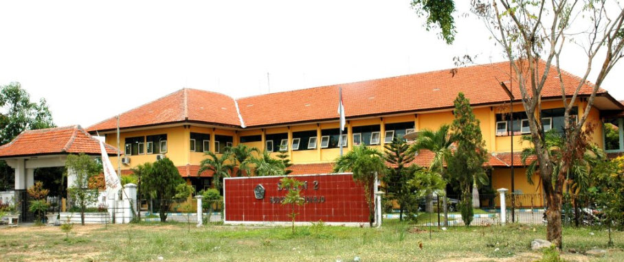

Sekolah Menengah Kejuruan Negeri 2 Buduran (SMK) berasal dari Sekolah Menengah Ekonomi Atas (SMEA) yang sebelumnya merupakan peningkatan sekolah dari Sekolah Menengah Ekonomi Pertama (SMEP) di Porong ditingkatkan menjadi Sekolah Menengah Ekonomi Atas (SMEA) yang diterbitkan melalui Keputusan Menteri Pendidikan dan Kebudayaan Republik Indonesia atas nama Sekretaris Jenderal T. Umar Ali Nomor : 017/0/1979 tanggal 29 Januari 1979. Bersama itu pula yang menjabat sebagai Kepala Sekolah Menengah Ekonomi Atas (SMEA) yang pertama dijabat oleh Bapak Drs. Heru Soejipto.
Pada tanggal 3 Oktober 1994 diadakan serah terima jabatan Kepala SMEA Negeri Sidoarjo dari Bapak Drs. Soehardjito yang memasuki purna tugas kepada Dra. Sri Wahyuni pindahan dari SMEA Negeri 2 Surabaya. Tanggal 7 Maret 1997, melalui keputusan Menteri Pendidikan dan Kebudayaan Republik Indonesia nomor : 036/0/1997 Tentang Perubahan Nomenklatur SMKTA menjadi SMK serta organisasi dan tatakerja SMK maka Sekolah yang bernama SMEA Negeri Sidoarjo berubah menjadi SMK Negeri 2 Buduran Kabupaten Sidoarjo. Tahun pelajaran 2004/2005 SMK Negeri 2 Buduran Sidoarjo membuka Program Studi Keahlian Teknik Komputer dan Informatika yaitu Kompetensi Keahlian Multimedia. Tanggal 12 Oktober 2004 serah terima jabatan Kepala SMK Negeri 2 Buduran Sidoarjo dari Ibu Dra. Sri wahyuni yang telah memasuki purna tugas kepada Ibu Dra. Fatimah, MM sebagai pelaksana tugas karena masih merangkap jabatan dengan Kepala SMK Negeri 1 Buduran sidoarjo. Tanggal 2 februari 2006 serah terima jabatan dari Pelaksana Tugas Ibu Dra. Fatimah, MM kepada penggantinya Drs. Gatot Saudi Akzam, MM pindahan dari SMK Negeri 1 Sidoarjo dan pejabat lama kembali memimpin SMK negeri 1 Buduran Sidoarjo.
